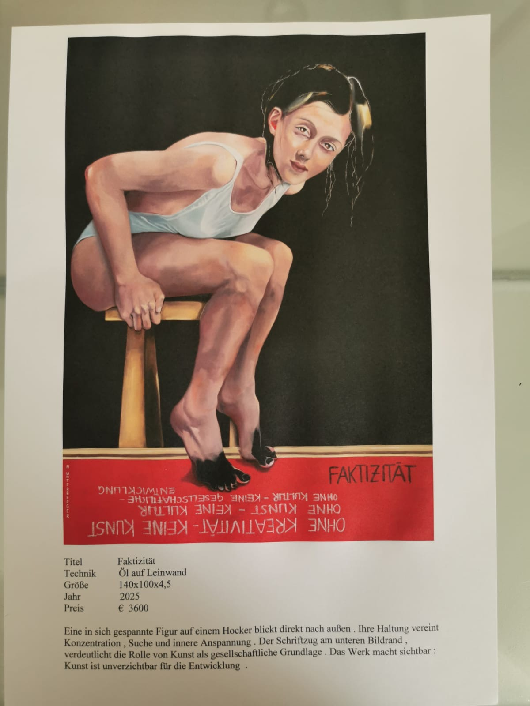

Öl auf Leinwand · 140 × 100 × 4,5 cm · 2025
Preis: € 3.600
„Faktizität“ beschäftigt sich mit der Wahrnehmung von Wirklichkeit und der Frage, wie sich Realität zwischen persönlicher Erfahrung, Interpretation und tatsächlicher Gegebenheit bewegt. Das Werk lädt dazu ein, genauer hinzusehen und die eigene Wahrnehmung zu hinterfragen. Was wir als wahr und wirklich empfinden, wird nicht nur durch das Sichtbare bestimmt, sondern auch durch unsere Erfahrungen, Erinnerungen und Vorstellungen. Die malerische Umsetzung verbindet dabei Ausdruck und Betrachtung und schafft Raum für eine individuelle Interpretation des Werkes. ## Aussage des Werkes „Faktizität“ steht für die Auseinandersetzung mit dem, was tatsächlich ist – und mit dem, was wir daraus machen. Das Gemälde soll den Betrachter dazu anregen, die eigene Sichtweise zu hinterfragen und zwischen objektiver Wirklichkeit und persönlicher Wahrnehmung zu unterscheiden.